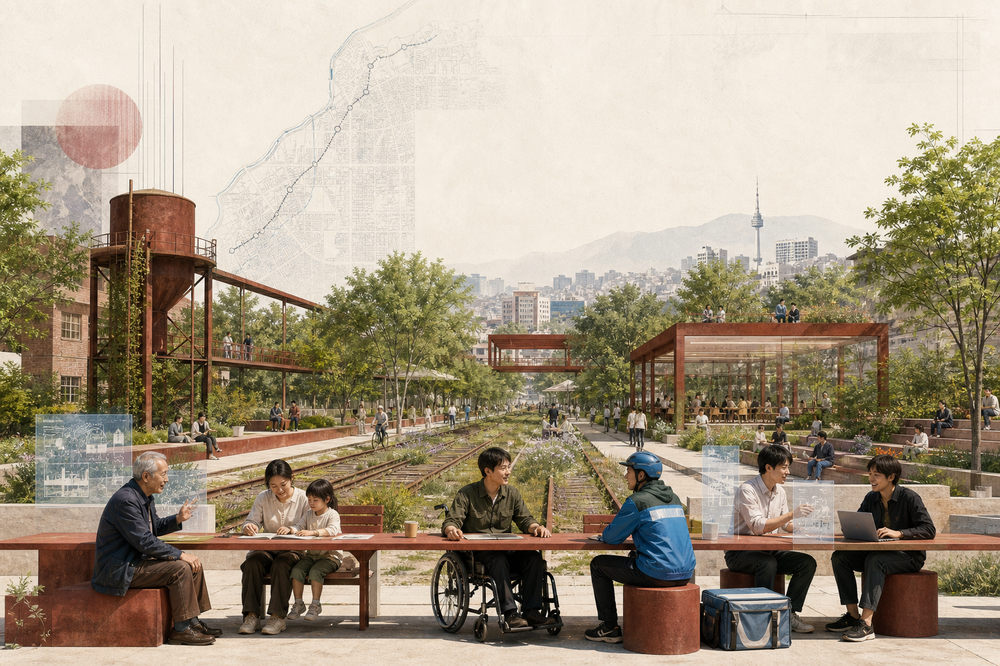

Test Seat Yard
A closable testing promenade, green bleachers, and a normal public bypass face Qinghe.
- Edge accessibility vision
- Universal-design robot route
- District energy digital twin
Controlled hours · physical stop · independent evaluation
AI should not occupy the city first. It should first give residents a place to sit, ask, opt out, and reach a human.

A seat is both a physical place and a position in public decisions. Each node combines accessible rest, a plain-language data notice, a non-digital route, a responsible human, and a review date.

Shade, back support, wheelchair turning space, and non-commercial rest are the first admission gate.
Paper, tactile information, continuous signs, and on-site service remain available.
Every seat publishes purpose, devices, retention, steward, and deletion process.
Equipment switches off, structures come apart, data is deleted, and failed pilots fully leave.
Zhongzhiyuan validates safety. AI Origin translates research into everyday problems. Dazhongsi tests voluntary adoption, sustainable operation, and public value.
A closable testing promenade, green bleachers, and a normal public bypass face Qinghe.
Universities, open-source communities, residents, and startup services share one continuous table.
Consumer trials, merchant services, international exchange, and public review meet at the station.

Begin with an everyday problem, then decide whether AI is necessary. Filter by service, mobility, or industrial validation.
Public weather only; no face recognition; human patrol during extremes.
Older people / outdoor workersVoluntary reports and facility status; tactile signs and hotline remain.
Wheelchair / low visionCrowd level only; no child tracking; staff remain responsible.
Parents / childrenAnonymous by default; visible handoff; no age-based price discrimination.
Low digital confidenceWater, toilet, charging, storage; never linked to platform performance.
Delivery workersRights-cleared history; generated material sourced and correctable.
Residents / visitorsAnonymous paper option, minimal contact data, human work-order check.
All usersPublic schedules and aggregate flow; no personal commute profile.
CommutersNo diagnosis or medical record; professionals make medical decisions.
NeighboursItem-level permissions; offline quiet seats remain available.
Students / foundersDetect obstacles, not identity; raw imagery stays on device.
Industrial validation 1Low speed, physical stop, supervisor, and public bypass.
Industrial validation 2Facility data only; engineers verify efficiency claims.
Industrial validation 3Open device register and retention; community data-trustee audit.
Residents / schools / firmsCalls and screens do not prove progress. Every 100 days, each pilot passes space, data, and public-value gates.

Implementation does not pour the concept into permanent concrete at once. Small trials retain the right to leave, allowing the city to learn through use.
Accessibility audit, voluntary interviews, issue map, and device register; place twelve movable seats.
One controlled pilot per room; continue only after safe operation, usable exit, and public review.
Repair three east-west walking links, shaded rest, courier resupply, and public ground floors.
Create a data trustee, open evaluation, and Seat Exchange Day; replicate only approved scenarios.

The index reconnects the exhibition narrative to planning tasks, spatial baselines, and machine-readable evidence.
One spine, three rooms, and twelve seats using provisional geometry.
43.6 km² research, about 11.4 km² overall design, about 368.4 ha key areas.
Test Seat Yard, Common Table Hall, and Seat Exchange Station.
Research, enterprise service, community service, and open green space are proposals.
One north-south spine and three east-west stitches remain legible offline.
Shaded seats, permeable ground, rivers, and parks form a cooling network.
P0 co-test, P1 trial, P2 stitch, P3 network governance; review every 100 days.
Fourteen cards; S11-S13 are industrial validation with human safeguards.
Provisional overall area; recalculate with official polygons.
Concept geometry, not an existing or approved indicator.
Concept geometry pending official base data.
Announcement 1.3-1.5 and agent.1-agent.6 map in the compliance matrix.
Deterministic, spatial, professional-evidence, and visual-packaging gates.
Controls, rights, buildings, utilities, transport, fire, heritage, and operators remain unconfirmed.
“AI Origin” should also be an origin of public responsibility.
Every model must first learn to give the city a place.
The overall area and all three key areas use provisional repository geometry. Every drawing is conceptual and must be recalculated after official boundaries, controls, rights, building, utilities, transport, and heritage records are released.
AUTHORGitHub: ywlvene · Codex Haidian lived-experience Agent